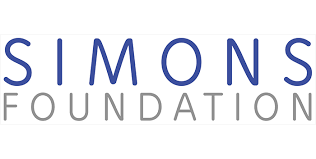

Scientific Committee
- Eric Cances (École des Ponts & INRIA, Paris)
- Svetlana Jitomirskaya (UC Berkeley)
- Mitchell Luskin (University of Minnesota)
- Allan MacDonald (UT Austin)
Scientific scope
The aim of this workshop is to bring together mathematicians and physicists working on the topic of 2D materials and in particular moiré materials such as twisted bilayer graphene (TBG). These materials have extremely rich and interesting properties, some of which are still poorly understood from a physical point of view. Their study opens up numerous possibilities for interdisciplinary collaboration on modeling, mathematical analysis of models and numerical simulation.
Support
|  |
|